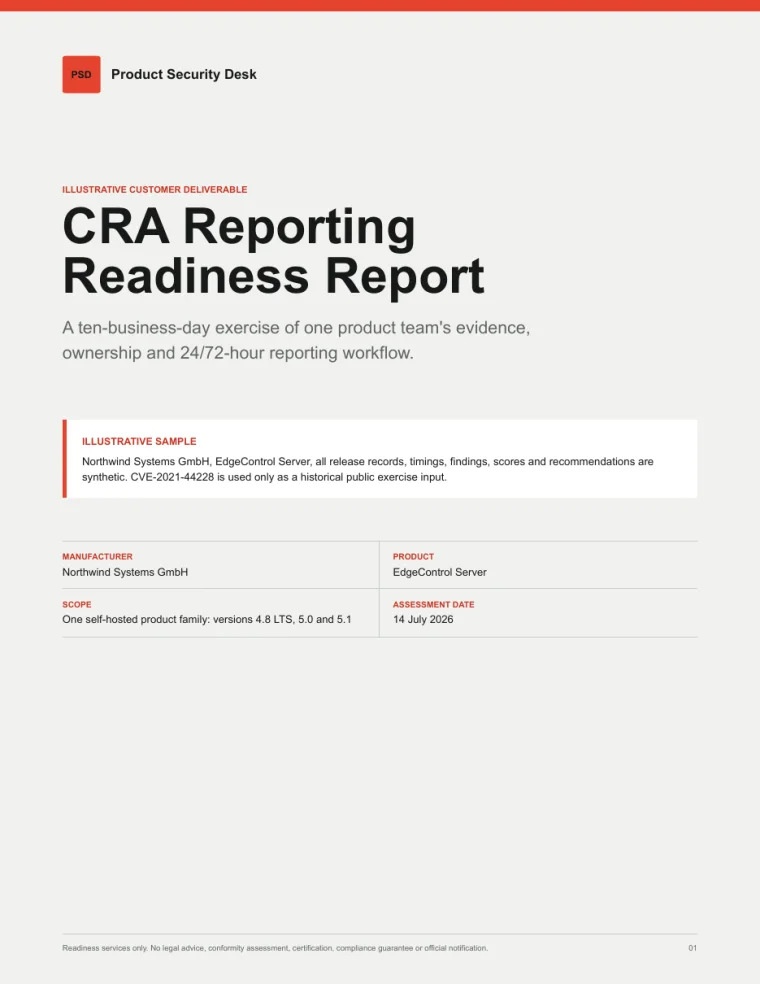

Product boundary
Inventory one product or release family, its supported versions, and the evidence sources used during the exercise.
Product Security Desk
In ten business days, test whether one product team can identify affected releases, assemble supporting evidence, and operate a controlled 24/72-hour reporting workflow.
Reporting sequence
Can the right owner identify the product, event, and available evidence quickly enough to act?
Can the team establish affected releases, known impact, mitigations, and unresolved questions?
CRA reporting obligations begin 11 September 2026 for covered actively exploited vulnerabilities and severe incidents. Read the European Commission guidance.
The engagement
We use one realistic product-security scenario to find where evidence, ownership, and decisions break down. The output is a bounded operational plan your team can review and improve.
Inventory one product or release family, its supported versions, and the evidence sources used during the exercise.
Review existing SBOM coverage and quality without replacing your scanners or requiring source-code review.
Map vulnerability intake, triage, decision, remediation, evidence, and reporting responsibilities.
Run an actively exploited third-party component scenario against your current operating process.
Draft a practical 24/72-hour evidence and reporting workflow with named decision points and escalation paths.
Prioritize evidence gaps, assign owners, and sequence the next improvements after the final review.
Material conclusions are designed to receive independent product-security or CRA expert review. Reviewer availability is confirmed before booking.

Illustrative sample
This 12-page synthetic example shows how evidence, timing, ownership, and reporting-field readiness are turned into a decision-ready handover.
Fictional organization, product, timings, and findings. No customer data.
Engagement fit
This first offer is intentionally narrow. A short fit call should establish whether the product, pressure, and evidence are suitable before either side commits.
Good fit
Not this sprint
Ten-business-day process
Confirm the product boundary, stakeholders, evidence request, confidentiality terms, and exercise scenario.
Review current releases, SBOM coverage, vulnerability practices, evidence locations, and responsibilities.
Work through the scenario, record decision and evidence gaps, and test the reporting path.
Prepare the draft runbook and ninety-day plan, complete material review, and present the findings.
Initial design-partner terms
The first three engagements are priced to test a repeatable delivery model with real product teams.
Questions
No. It is an operational readiness engagement. It does not provide legal advice, certification, conformity assessment, CE marking, or a compliance guarantee. The manufacturer retains responsibility for decisions, declarations, remediation, and submissions.
No. Source-code review is outside scope. We agree the minimum evidence needed before kickoff, prefer customer-controlled scanning where practical, and do not request credentials or undisclosed vulnerability material through this website.
No. The sprint tests and documents the reporting workflow. Any official filing or external vulnerability disclosure requires explicit manufacturer approval and remains the manufacturer's responsibility.
After scope confirmation, confidentiality terms, receipt of the agreed inputs, and confirmation of reviewer availability.
Next step
We will confirm the product boundary, current EU pressure, reporting workflow, and minimum evidence required. If the sprint is not appropriate, we will say so.
Prefer email? hello@productsecuritydesk.com